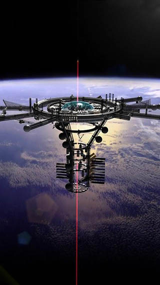

Space-based solar power systems have been proposed for over 40 years. These systems consist of many acres of photovoltaic arrays that collect solar energy and then beam that energy down to Earth. Being in space these systems run 24 hours per day, 365 days a year and can beam the energy to practically any location on Earth. Space-based solar power generates clean affordable energy but the rocket launch costs for deploying such a system make it untenable.
With an operational space elevator the launch costs become minimal and large space-based solar power systems become an excellent choice for permanent clean energy for the entire planet.
The current changes in our use of fossil fuels forces us to use lithium batteries for the vehicles and energy storage at renewable energy systems. Lithium batteries require lithium, cobalt, nickel and iron for production. These metals are in limited and restricted supply globally and could be problematic in the future. One asteroid, 16 Psyche, is thought to be 85% iron, nickel, cobalt and other metals and weighs 230,000,000,000,000,000 tons. Mining this single asteroid would supply all of our needs for centuries. Mining asteroids using rockets is expensive making it unattractive. An operational space elevator on Earth and a second small elevator on 16 Psyche would enable efficient inexpensive mining of metals we are growing short of here on Earth.
Large space stations in Earth orbit have been discussed since the 1960’s. Several space stations have been constructed by national governments for low-level research. The cost of placing these facilities and the people to work on them in orbit have been prohibitive. To place the International Space Station in orbit cost $50B in rocket launches and took years.The space elevator could place the entire International Space Station in geosynchronous orbit within two months at a cost of $90M.
With construction of the space elevator, tens of tons of hardware and people can be transported to Earth orbit every few days for $250/kg initially and a few dollars/kg eventually. These transportation rates and costs will enable large space stations/hotels/commercial facilities etc. to be placed and utilized in Earth orbit. These orbital stations will also not be constrained by rocket dimensions. Large struts, station sections or solar arrays hundreds of feet in length could be launched without folding. It is expected that initially an orbital station would be utilized for entertainment/vacation/hotel and corporate for construction, maintenance and operations of the telecommunications satellites, space-based solar power, mining and colony operations.
The most exciting but likely least business/profit oriented operations would be the colonization of the Moon and Mars. For many decades people have dreamed of living on the Moon or Mars in various habitats, domes, lava tubes,... but few hard plans for self-sustaining colonies with a justification for initial construction have been made. That being said, we would love to see the eventual colonization of the rest of the solar system for various long-term reasons.
With the space elevator colonization costs and survivability improve dramatically. With a space elevator transit times to Mars would drop to a month and the costs would be no more than construction and deployment of an Earth orbital station. Of course the first priority would be a Martian elevator making going to and from the surface of Mars easy and low-cost. Proposals have been made for both Moon and Mars elevators as far back as 2000. After construction of an Earth elevator, a lunar or Martian elevator would be inexpensive and quick to construct. These could be built in Earth orbit and thrown to their destination to be deployed. The cost of traveling to Mars may be as little as $50,000 once the systems are established.